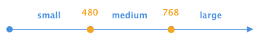

This demonstrates how you can have different labels based on window widths. It requires Breakpoint X (Crossing).
This page contains two breakpoints as shown. There are three label options. The label changes as the width of the browser does so. This is achieved by using data attributes following this pattern data-label-{segment name}="{segment label}". If you omit a value for one or more segments, the fallback is the innerHTML of the label.

<label for="responsive-demo" data-label-medium="Medium label" data-label-large="Large label">Small label</label>
<input type="text" name="responsive_demo" id="responsive-demo"/>
$('input').loftLabels({
breakpointX: new BreakpointX([480, 768], ['small', 'medium', 'large']),
});
__title is brought to you by In the Loft Studios